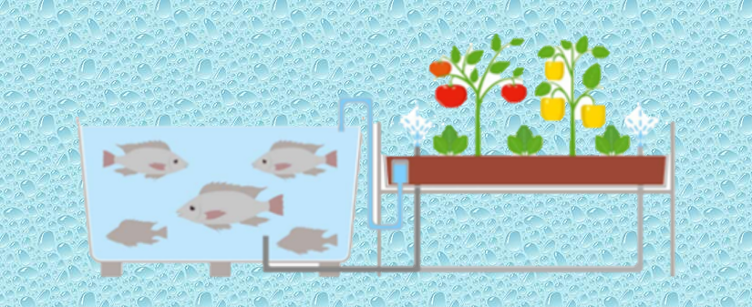

Es el cultivo de peces y plantas con recirculación de agua que utiliza bacterias para convertir los desechos de los peces en nutrientes para las plantas. Integración de un sistema de acuacultura con recirculación de agua en conjunto con un sistema hidropónico.
•Se requieren conocimientos básicos de fisiología vegetal (hortalizas) y animal (peces), incluyendo parámetros de calidad de agua, ya que es un sistema de integración de dos cultivos.
•A menudo es difícil encontrar una combinación perfecta entre las necesidades (como el pH, la temperatura, el sustrato) de los peces y las plantas.
•Los errores en la gestión del sistema pueden provocar rápidamente su colapso.
•Se necesita una gestión diaria, lo que significa que la organización es crucial.
•Sistema depende de la electricidad para el funcionamiento de bombas y filtros, lo que pone en riesgo todo el sistema en caso de cortes del suministro eléctrico, además de los costes por concepto de energía eléctrica.
•Hay que comprar regularmente el pienso para los peces.
La demanda de cultivos orgánicos tiene un alto potencial y un espacio sin explotar para las granjas acuapónicas emergentes.
Aquí puedes añadir el contenido o una imagen del ciclo biológico.